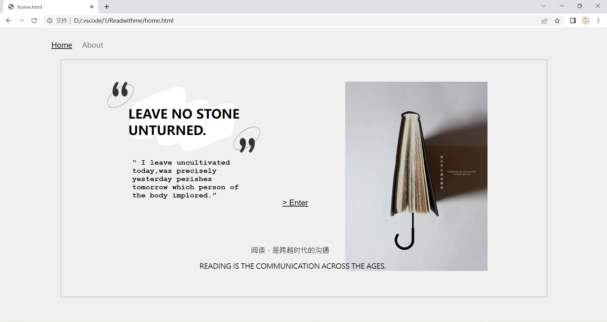
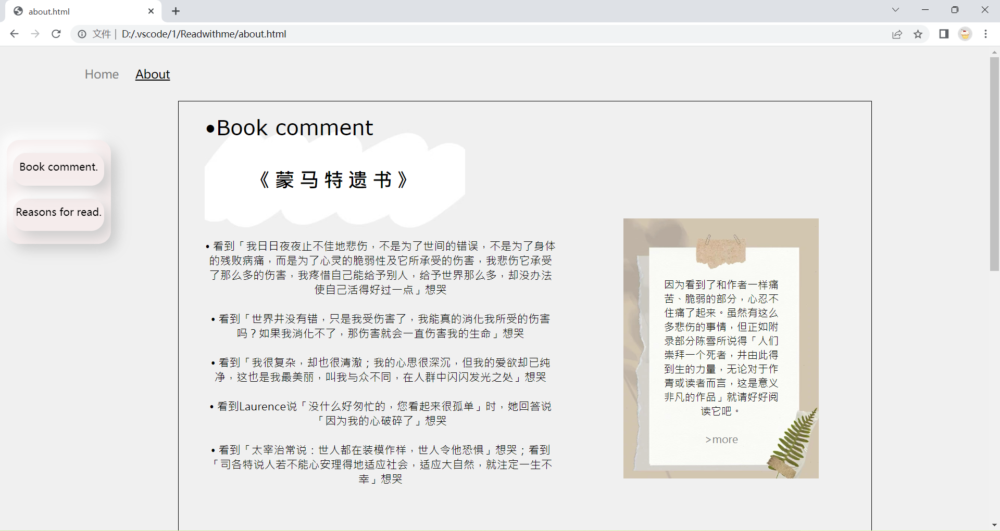
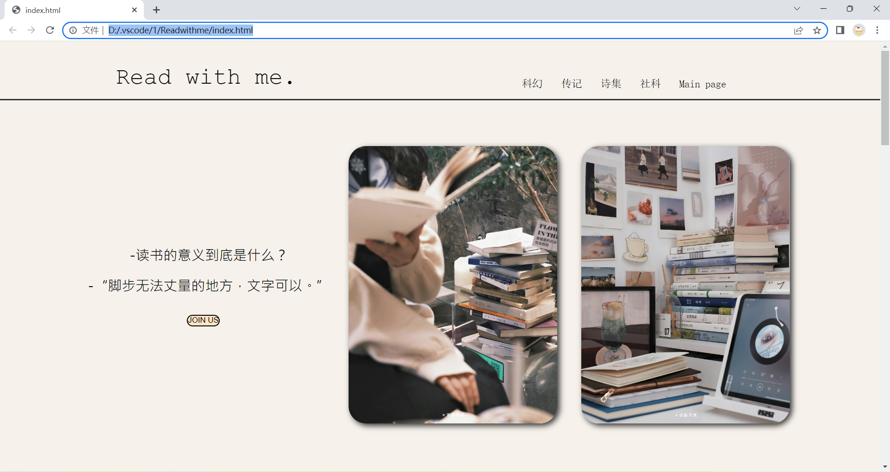
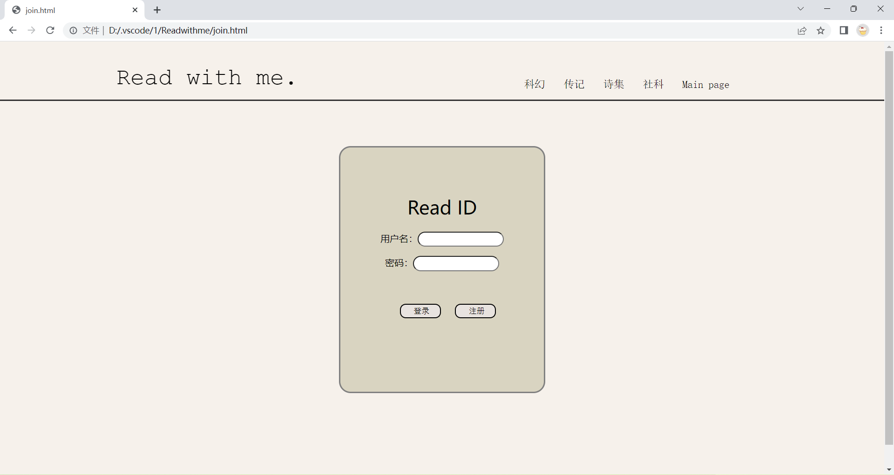
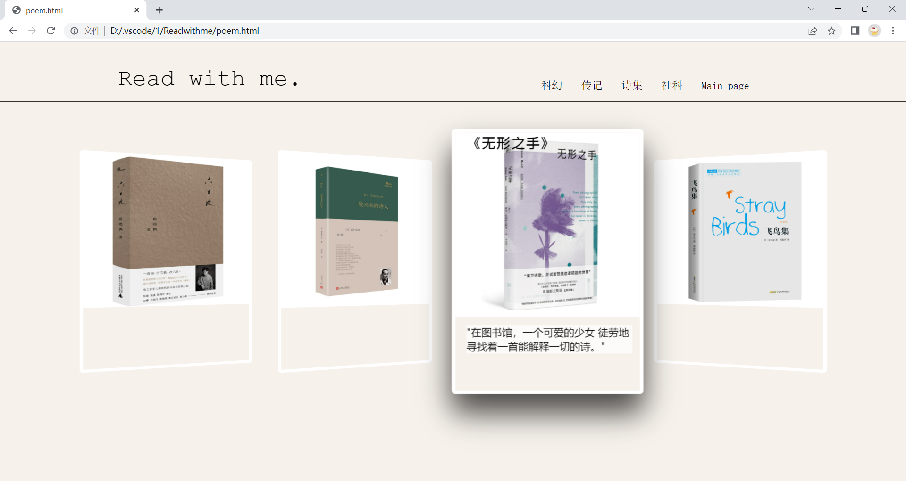
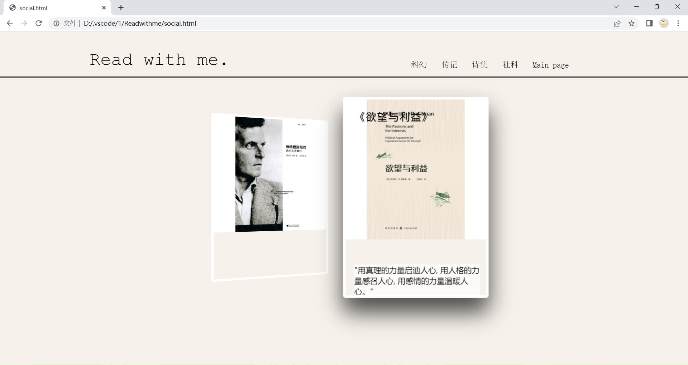
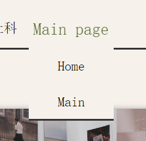
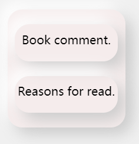
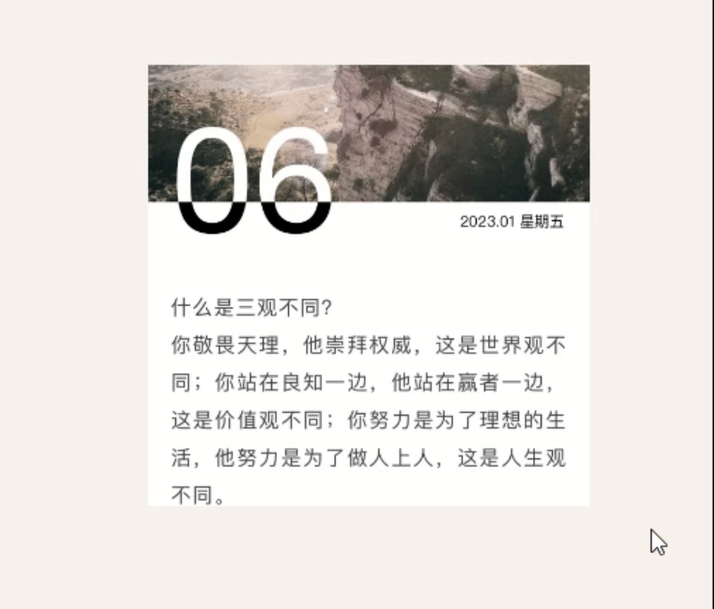
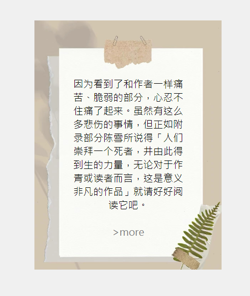

网站中排版以及设计均为原创，内含自己设计的背景图片和文案，引用类文字均已打上双引号，下面是一些图片的出处。
1 ) 博主：@深陷月亮
2 ) 句读app：每日一言
3 ) 当当网
• 关于内附链接
1 ) 当当网购买链接
2 ) 豆瓣读书书目链接
软件工程2211班 郑芷毓 0223543
网站介绍：这次大作业做的是一个以 「极简」为核心的阅读网站。自从着手开始准备大作业，就因为选题问题陷入纠结，而阅读主题的想法来源于身边放假后的大学生朋友们，他们中的很多一部分在放假后就不知道做什么，常常问我，有没有什么不看手机的娱乐活动，我想了很久，我觉得「看一本书」，是我能想到的最好的答案，于是，这个网站它来了。
网站中排版以及设计均为原创，内含自己设计的背景图片和文案，引用类文字均已打上双引号，下面是一些图片的出处。
1 ) 博主：@深陷月亮
2 ) 句读app：每日一言
3 ) 当当网
1 ) 当当网购买链接
2 ) 豆瓣读书书目链接
1 ) 整个作业中包含一个「 index 」主页，还有一个名为「 Home 」的前页。
2 ) index主页中包含一个「 join 」登录页面， 4 个悬浮展示页面。
3 ) home前页中包含一个 「 about 」子页。
4 ) 包含主页和报告在内一共「 9 」个子页。
5 ) 所有页面均可以通过跳转链接访问。
1 ) Home |
2 ) about |
|  |  |
3 ) index |
4 ) join |
|  |  |
5 )悬浮展示页面 |
|
|  |  |
1 ) 主页和报告页面都使用了「 表格 」做了图片和文字并列的列举。
2 ) 「 position 」和「 float 」定位在主页和前页中都有出现。
3 ) index主页有「 二级导航栏 」。
4 ) about子页中有「 侧边栏 」
5 ) 文字和按钮等都使用「伪类」做了动态效果。
6 ) 文字悬浮于图片之上。
1 ) 在主页页脚上方有「 返回顶部 」按钮。
2 ) 悬浮展示页中运用了「 flex布局 」 且加入了「 动态效果 」。

3 ) 侧边栏对盒子x,y轴的「 正负方向 」正负方向都加上了阴影，且使用了 「 圆角边框 」圆角边框。
• 在开始制作这个网页之前，我设想和构思了很久，也观摩，学习了非常多现代的比较成熟的网站，而我发现他们中的很大一部分都特别干净，特别简洁，并且观感很舒服。所以设计之初我就希望我自己的这个网页也能够整体贯穿 「 Less Is More 」 这个概念，并且我也在不停的寻找，花了很多心思对比和试错，最终调试出了这一些看起来舒服且和谐的网页配色。
• 在制作主页导航栏的过程中，我为了试网页看起来更干净，并没有制作二级导航栏，后来在添加二级导航栏了过程中也遇到了一些问题，因为原始的一些命名和布局不适合直接添加，我删删改改走了好多弯路，到后面实在无法找到正确改法，于是我重做了整个页头，更换了所有id和class的命名，这是困扰我比较久的一个地方。
• 之前也有想过插入图标库做一个伸缩侧边栏，但是总是无法引入链接所以就放弃了。
• 在完成这个大作业的整个过程中，我能明显感觉到自己是在进步的。从整个页面的制作来看，后制作的页面明显更优一些。我对于网站的整个设计和布局有了更加清楚的认识，实际操作的速度也比以前快了许多，之前有些模糊的概念也在完成作业的过程中一点一点变得清晰。我自己认为我的优点在于：
1 ) 页面比较简洁，但又有点设计感。
2 ) 配色和谐，让人的观感很舒服。
3 ) 完成度较高，比较充分展示了一个学期所学的成果。
• 我认为这个网页可以优化的地方还有很多，因为没有自学一些js所以网站整个看起来没有那么生动，我把自己学过的所有css全部用上了，但看起来还是有些差强人意，但我觉得这不是我的上限，多给我一点时间，学习了js，我相信我能做的更好。